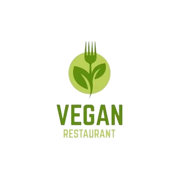

Explora restaurants vegans 
Descobreix una gran varietat de restaurants vegans, vegetarians i aptes per a vegans prop de tu en HappyCow. També disponible en una pràctica aplicació per a Android i iOS. HappyCow va més enllà dels restaurants, ajudant-te a trobar botigues veganes, forns, gelateries i hotels amb opcions veganes. El teu guia de restaurants vegans a Barcelona.

Troba supermercats 
ExploraSupperVeggieper a obtenir informació completa sobre els productes vegans disponibles en les principals cadenes de supermercats de Catalunya.
Descobreix botigues veganes 
Entra enFAADAper a trobar una llista seleccionada de les principals botigues d'alimentació vegana de Catalunya.